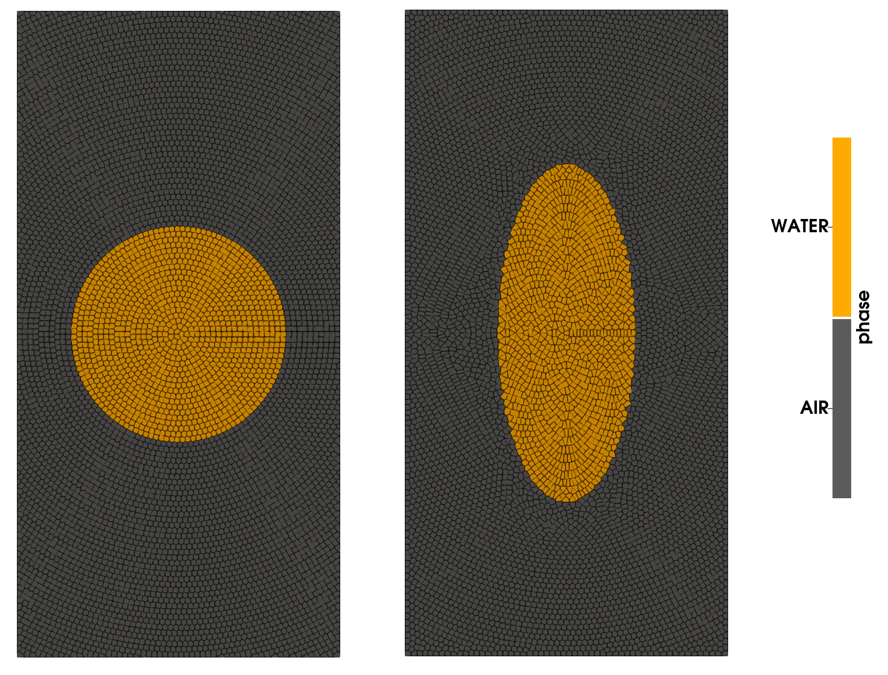

Example 9: Circular patch problem
Circular patch is a free surface benchmark which admits a semi-analytical solution. Initially, there is a circle of radius 1 with some prescribed velocity. The resulting velocity deformation squeezes the patch. Now, we cannot do free surface with this code, but we can find a reasonable good solution by turning it into a multiphase problem where the surrounding air has much lower density.
module cpatch
include("../src/LagrangianVoronoi.jl")
using .LagrangianVoronoi
using DifferentialEquations
using StaticArrays
using Plots
using Parameters
using Base.Threads
using WriteVTK
using LinearAlgebra
using Polyester
using LaTeXStrings, CSV, DataFrames
const A0 = 0.5
const R = 1.0
const Rho = 1000.0
const rho = Rho/800
const dr = R/20
const v_char = A0*R
const dt = 0.1*dr/v_char
const t_end = 1.0
const nframes = 100
const tau = 0.1
const c0 = 100.0
const smoothing_length = 3dr
const export_path = "results/cpatch"
const xlims = (-1.5R, 1.5R)
const ylims = (-3.0R, 3.0R)
const WATER = 0
const AIR = 1
function ic!(p::VoronoiPolygon, e)
p.c2 = Inf
r = norm(p.x)
p.phase = (r < R) ? WATER : AIR
p.rho = (p.phase == WATER ? Rho : rho)
p.mass = p.rho*area(p)
if (p.phase == WATER)
p.v = v_exact(p.x, e(0.0))
p.P = P_exact(p.x, e(0.0))
end
end
mutable struct Simulation <: SimulationWorkspace
grid::GridMulti
solver::PressureSolver{PolygonMulti}
E::Float64 # total energy
v_err::Float64 # L^2 error
P_err::Float64
e::Any # function that describes the exact evolution of the ellipse
Simulation() = begin
ode = ODEProblem(ellipse_ode, [R, R, A0], (0.0, t_end))
e = solve(ode, Rodas4(), reltol = 1e-8, abstol = 1e-8)
domain = Rectangle(xlims = xlims, ylims = ylims)
grid = GridMulti(domain, dr)
populate_circ!(grid, ic! = (p -> ic!(p, e)))
solver = PressureSolver(grid, verbose=false)
return new(grid, solver, 0.0, 0.0, 0.0, e)
end
end
function ellipse_ode(e, _, _)
return [
-e[3]*e[1],
+e[3]*e[2],
(e[3]^2)*(e[1]^2 - e[2]^2)/(e[1]^2 + e[2]^2)
]
end
function v_exact(x::RealVector, e)::RealVector
return RealVector(-e[3]*x[1], e[3]*x[2])
end
function P_exact(x::RealVector, e)::Float64
return -Rho*(e[1]*e[2]*e[3])^2/(e[1]^2 + e[2]^2)*((x[1]/e[1])^2 + (x[2]/e[2])^2 - 1.0)
end
function step!(sim::Simulation, t::Float64)
move!(sim.grid, dt)
find_rho!(sim.grid)
find_pressure!(sim.solver, dt)
pressure_step!(sim.grid, dt)
phase_preserving_remapping!(sim.grid, dt, smoothing_length)
end
function postproc!(sim::Simulation, t::Float64)
sim.v_err = 0.0
sim.P_err = 0.0
sim.E = 0.0
max_v_err = 0.0
max_P_err = 0.0
P_avg = 0.0
A_tot = 0.0
for p in sim.grid.polygons
if (p.phase == AIR) continue end
A = area(p)
et = sim.e(t)
sim.v_err += A*norm_squared(p.v - v_exact(p.x, et))
max_v_err += A*norm_squared(v_exact(p.x, et))
P_avg += A*(p.P - P_exact(p.x, et))
A_tot += A
max_P_err += A*P_exact(p.x, et)^2
sim.E += p.mass*norm_squared(p.v)
end
P_avg /= A_tot
for p in sim.grid.polygons
if (p.phase == AIR) continue end
A = area(p)
et = sim.e(t)
sim.P_err += A*(p.P - P_exact(p.x, et) - P_avg)^2
end
sim.P_err = sqrt(sim.P_err)/sqrt(max_P_err)
sim.v_err = sqrt(sim.v_err)/sqrt(max_v_err)
@show t
@show sim.v_err
@show sim.P_err
@show sim.E
println()
end
function main()
sim = Simulation()
run!(sim, dt, t_end, step!;
path = export_path,
postproc! = postproc!,
vtp_vars = (:v, :P, :rho, :phase), # local variables exported into vtp
csv_vars = (:E, :v_err, :P_err), # global variables exported into csv
nframes = nframes, # number of time frames
save_points = true
)
end
function linear_regression(x, y)
N = length(x)
logx = log10.(x)
logy = log10.(y)
A = [logx ones(N)]
b = A\logy
return b
end
function make_convergence_graph()
data = CSV.read(joinpath(export_path, "convergence_data.csv"), DataFrame)
x = log10.(data.N)
y = [log10.(data.P) log10.(data.v)]
eoc_p = linear_regression(data.N, data.P)[1]
eoc_v = linear_regression(data.N, data.v)[1]
xlabel = L"\log N"
ylabel = L"\log \epsilon"
p_label = L"p"*" (EOC = $(-round(eoc_p, digits=2)))"
v_label = L"v"*" (EOC = $(-round(eoc_v, digits=2)))"
plt = plot(x, y, xlabel=xlabel, ylabel=ylabel, label = [p_label v_label], marker = :hex, axis_ratio = 1.0)
savefig(plt, joinpath(export_path, "convergence.pdf"))
end
endThis page was generated using Literate.jl.